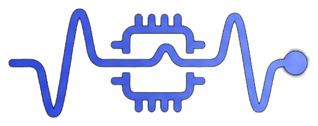

Not yet verified on real hardware end-to-end — treat this as a preview for feedback, not a finished product.
View releases & known issues on GitHub →
ELRSense Configurator ESP32-C3 ZeroGenerates custom telemetry firmware for a companion board that feeds sensor data into your ExpressLRS PWM receiver. Pick your board and sensors, map each to a pin where applicable, download a single self-contained .ino, flash it, and go fly, drive, or float.